20250912
1. gen10 i7 win7
NB:

black screen after installation.

update the i219-v:
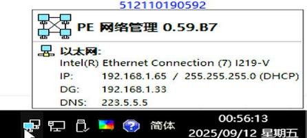
Q0 cpu:

Error for code43:

Change cpu to 10400:
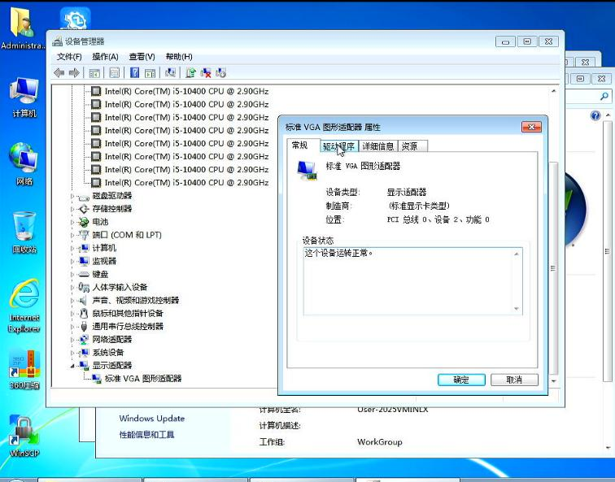
Reinstall driver:


This time OK:

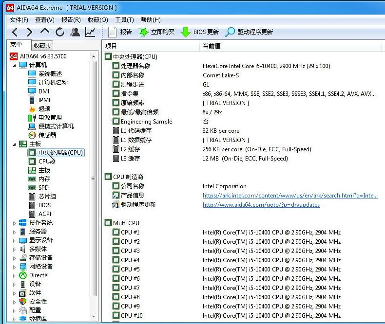


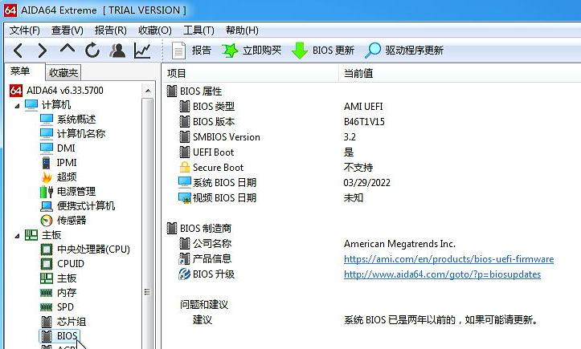
2. idv verification
gen 10 won't start with gop.
Ignore, directly verify the win7 vm starting.
Add first winpe iso:

Add second iso(which contains the real ghost file):

Boot device order:

Add a vnc display with qxl graphical card:
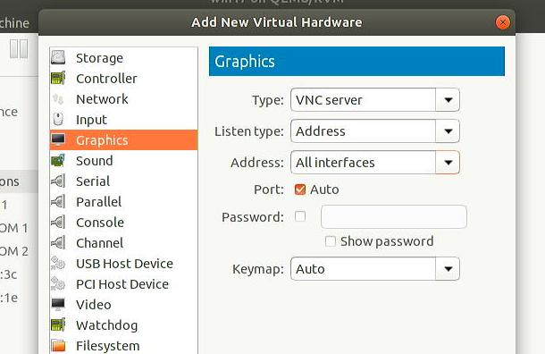

快速分区:

2 partitions with esr:
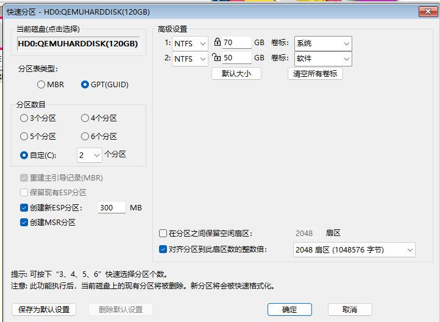
REinstall system:

Selct wim file:

click uefi win7 64 bit logo :
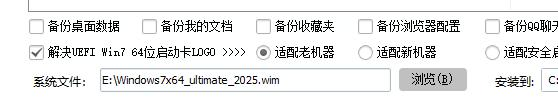
install:
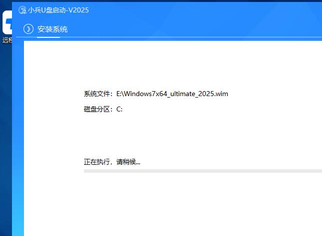
Continue:
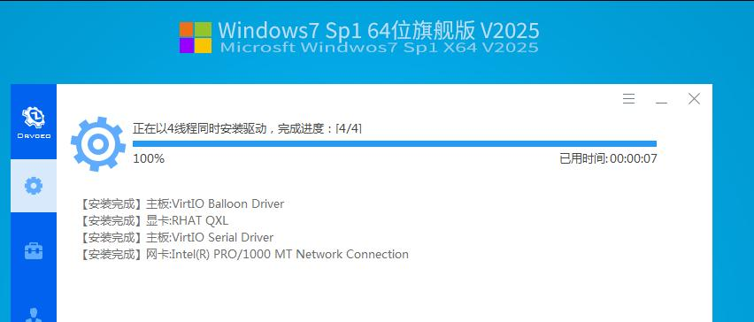 Continue:

Open remote desktop and set password for Administrator, then shutdown the vm.
Add igpu:

and usb controller:

<domain type='kvm' xmlns:qemu='http://libvirt.org/schemas/domain/qemu/1.0'>
<rom bar='on' file='/usr/share/OVMF/vbios_gvt_uefi.rom'/>
</memballoon>
</devices>
<qemu:commandline>
<qemu:arg value='-set'/>
<qemu:arg value='device.hostdev0.x-igd-opregion=on'/>
<qemu:arg value='-set'/>
<qemu:arg value='device.hostdev0.x-igd-gms=2'/>
<qemu:arg value='-set'/>
<qemu:arg value='device.hostdev0.multifunction=on'/>
</qemu:commandline>
</domain>
Edit the /etc/libvirt/hooks/qemu for adding win17
Don't remove vnc/qxl,

Detect graphical card:

Install driver:

Remove 360 then your uhd 630 would be OK:
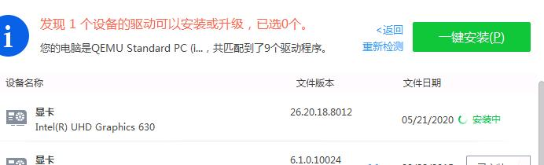
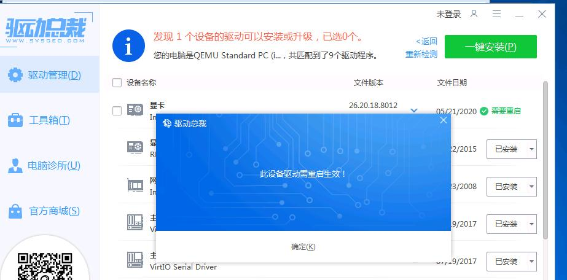
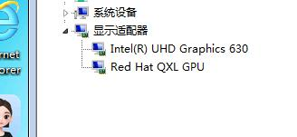
shutdown, remove qxl/vnc.
not ok.

change qxl to video none:
<video>
<model type='none'/>
<alias name='video0'/>
</video>
Failed(wont' startup)
Should enable gop part for let this solution perfect.
3. extract and form new gop
Use YunGuJian:
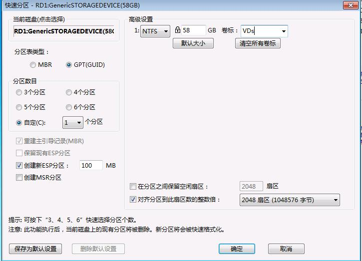
Copy to efi directory:


Also add enrol :

Copy win10 pro disk file:
cp -r /run/media/dash/MW/DiskHub/Windows/10/22H2/Pro/a1fe3133 /run/media/dash/VDs
cd /run/media/dash/VDs/a1fe3133
7z x Windows10-22H2-Pro-L1.7z
rm -f Windows10-22H2-Pro-L1.7z
chmod 777 Windows10-22H2-Pro-L1.vhdx
cd ..
cp /run/media/dash/MW/vd.config .
vim vd.config


Put in the same folder:

UBU.bat:
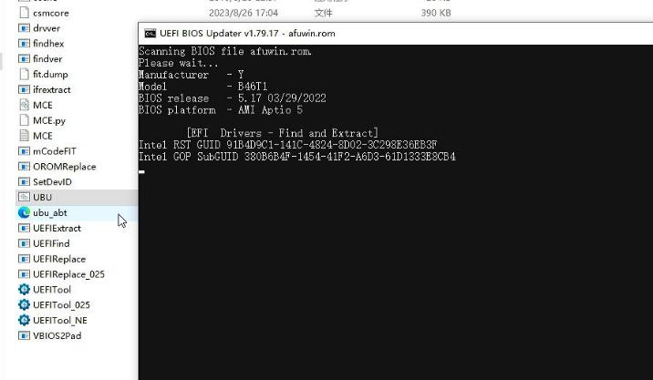

Press 2:
Press S:


Upload this extraced file: